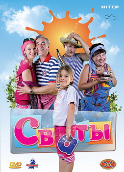

Сериал Сваты
Актеры

История сериала
«Сваты»
— комедийный телевизионный сериал студии «Квартал 95». За всё время существования проекта было выпущено семь сезонов сериала, а также мюзикл «Новогодние сваты», спин-офф сериала «Байки Митяя», телепередача «Сваты у плиты», мультсериал «Сватики» и цикл документальных фильмов «Сваты: Жизнь без грима» и «Сваты-6: За кадром».
Премьерные показы сериала «Сваты» в России прошли на телеканале «Россия-1», на Украине — на телеканалах «ICTV» (1 сезон), «Интер» (2—5 сезоны) и «1+1» (6—7 сезон), в Белоруссии — на телеканале «Беларусь 1». Премьера первого сезона состоялась 28 декабря 2008 года. Финальная серия сериала вышла в эфир 30 декабря 2021 года.
История создания
В 2008 году в Киеве был снят двухсерийный телефильм «Сваты», премьера которого на Украине состоялась 28 декабря 2008 года (премьера в России — 16 декабря 2009 года). Продолжение проекта не планировалось, однако при показе на телевидении фильм получил высокий зрительский интерес, и поэтому его продлили на второй сезон (который тоже был снят в формате телефильма), премьера на Украине состоялась 10 ноября 2009 года (премьера в России — 17 декабря 2009 года).
Позже фильм был продлён и на последующие сезоны (снятые в формате телесериалов). Их съёмки также велись на территории Украины. Третий сезон снимался летом 2009 года, премьера состоялась 11 ноября на телеканале «Интер», 18 декабря — на телеканале «Россия-1».
Летом 2010 года четвёртый сезон снимали в Ялте, а также в Турции, премьера сезона состоялась 15 ноября на телеканале «Интер».
Летом 2011 года снимался пятый сезон, премьера состоялась 5 декабря на телеканале «Интер», 19 декабря премьера состоялась на телеканале «Россия-1».
В 2012 году был снят шестой сезон телесериала, премьера которого состоялась 11 марта 2013 года на телеканале 1+1, 1 октября — на телеканале «Россия-1».
Шестой сезон должен был стать последним. Однако позже, по многочисленным просьбам телезрителей, создатели проекта решили снять продолжение. В 2015 году авторы заявили о готовности сценария седьмого сезона, но его съёмки были отложены из-за политической ситуации на Украине, следствием которой, в частности, стал запрет въезда на территорию Украины российским актёрам.
В июле 2017 года стартовали съёмки седьмого сезона, они проходили в Белоруссии. Однако 29 ноября 2017 года сериал был запрещён к показу на территории Украины. В связи с запретом съёмки сезона были приостановлены.
Весной 2019 года по решению суда был отменён запрет на показ сериала «Сваты», и Фёдору Добронравову разрешили въезд на Украину. В июне 2019 года Госкино Украины запретило показ второго сезона телесериала. 1 июля 2019 года после двухлетнего перерыва украинский телеканал 1+1 начал повторный показ сериала.
Съёмки седьмого сезона возобновились в январе 2020 года под Минском и проходили до марта. Создатели отсняли зимние сцены. Оставшиеся серии планировалось отснять летом 2020 года, но в июне 2020 года Фёдор Добронравов сообщил, что съёмки переносятся на 2021 год из-за пандемии COVID-19.
В начале июля 2021 съёмки седьмого сезона продолжились в Тбилиси (Грузия). 20 июля этого же года режиссёр сериала Андрей Яковлев заявил о завершении съёмок.
Премьера седьмого сезона состоялась 20 декабря 2021 года на телеканале 1+1, а 27 декабря — на телеканале Россия-1.
Сюжет
«Сваты» (2008)
Молодые супруги Маша и Максим Ковалёвы решают съездить отдохнуть в Италию, а свою пятилетнюю дочь Женю оставить под присмотр своим родителям, но те, сославшись на занятость, отказываются. В результате неразберихи к внучке приезжают родители и Маши, и Максима.
Будучи выходцами из абсолютно противоположных социальных пластов (родители Маши — Валентина и Иван Будько — простые сельские жители, а родители Максима — Ольга и Юрий Ковалёвы — типичные городские интеллигенты с утончёнными манерами), выясняется, что они не выносят друг друга. Они оказываются в одном доме вчетвером, и у них возникает конфликт интересов. У каждого свои методы воспитания. Начинается борьба за внимание внучки. Городские во всём её ограничивают, сельские же наоборот — многое разрешают.
Сваты постоянно попадают в нелепые ситуации, выход из которых им приходится находить вместе, что их и сближает. К концу они всё-таки мирятся не без помощи Жени.
«Сваты 2» (2009)
История происходит в канун 8 марта. Маша на последнем месяце беременности. У неё с Максимом возникает кризис в отношениях. В проблему вмешивается их шестилетняя дочь Женя. Девочка находит оригинальный способ решения — вызывает своих бабушек и дедушек.
Сваты спешат на помощь. Они стараются помирить своих детей, но каждый делает это по-своему, в результате чего сваты не просто ссорятся с детьми, но и доводят семью до грани развода. Спасти ситуацию может только объединение сватов.
Маша рожает двойню 8 марта.
«Сваты 3» (2009)
Прошло несколько месяцев с событий второго сезона. Наступило лето. Маша и Максим уезжают в Нидерланды, а Женю оставляют в посёлке Кучугуры под присмотром Будько. К ним приезжают Ковалёвы, чтобы помочь присмотреть за внучкой и заодно подготовить её к поступлению в школу.
С этого момента в историю вписывается не менее главный герой — друг, кум, сосед и собутыльник Ивана Будько — Митяй (Дмитрий Буханкин). В этом сезоне сваты начинают ладить: им вместе приходится вести здоровый образ жизни: не пить, не курить и не есть после 18.00; поддержать Ивана, которого уволили с работы, и даже провести свадьбу сына Митяя.
Благодаря множеству подготовительных уроков Ковалёвых Женя сдаёт экзамены в лицей, но оказывается, что родители хотят устроить её в школу при посольстве в Нидерландах.
«Сваты 4» (2010)
Действие происходит через год после событий третьего сезона, и вновь летом.
Сваты уехали в Турцию навестить детей и внуков. Родители Жени отправляют её в детский лагерь «Артек». Бабушки и дедушки отправились в Крым. Но они туда поехали не столько отдыхать, сколько опекать свою любимую внучку Женечку. Сваты так и не научились жить без внучки, трудно им уживаться и друг с другом. По счастливому обстоятельству Максим находит родителям дом, который они превращают в отель, чтобы в знак благодарности за нахождение временного жилья все заработанные деньги отдать Маше и Максиму. Ольга и Юрий скрывают от всех свой развод, но вскоре о нём узнают все, и в том числе родители Ольги. Спустя некоторое время Юрий снова женится на Ольге. Сваты мирятся со своей соседкой Ларисой.
«Сваты 5» (2011)
С момента последних событий прошло восемь лет.
Молодые Ковалёвы — Максим и Маша — всё это время жили в Нидерландах, но теперь они решили вернуться на родину. Бабушки и дедушка (Юрий Анатольевич Ковалёв умер три года назад с момента действия фильма от сердечного приступа) с нетерпением ждали встречи со своими внуками, но никто из них не ожидал увидеть весёлую, задорную и милую Женечку в новом облике гота с кучей проблем и конфликтов. Но это только полбеды на головы сватов: ведь есть ещё и двойняшки — Никита и Вика, которые оказались настолько современными и расчётливыми, что чёрная одежда и «чёрный» юмор их старшей сестры покажутся цветочками в сравнении с их выходками. На всё лето внуки попали в общество супругов Будько и Ольги Ковалёвой «на перевоспитание». Александр Беркович попытается завоевать сердце Ольги, и со временем ему это удастся. Женя обретёт подругу, которая окажется сильной соперницей и в результате отобьёт у неё парня.
В Кучугуры из Крыма вернётся Митяй с семьёй: женой Ларисой и сыном Артёмкой. Валентина научится водить машину и организует продовольственный бизнес вместе с Ларисой, Ксенией и Евгением Борисовичем Жуком.
«Сваты 6» (2012)
Действие происходит через полгода после событий, которые описаны в «Сватах 5». В 6 сезоне сюжет охватывает почти весь год: с марта и вплоть до Нового года. За это время в жизни главных героев произойдёт многое. Бабушки и дедушка будут по-прежнему перевоспитывать нерадивых близнецов и помогать Жене решать проблемы. Ольга Николаевна и Александр Беркович наконец официально оформят свои отношения и поженятся. Иван Будько займётся бизнесом, спасёт страну от бюрократии, отправится на заработки, отравится грибами и отметит юбилей. Женя окончит школу, поступит в институт и встретит свою любовь. Лариса родит девочку — Митяй в третий раз станет папой.
Семья Будько останется без крыши над головой, а к Буханкиным приедет тёща. Сваты отправятся на «Евро-2012», в круиз по золотому кольцу России, в турпоход и в Карпаты, где встретят Новый год.
«Сваты 7» (2021)
Женя стала совсем взрослой, а бабушки и дедушка по-прежнему активно помогают ей на жизненном пути. Сватов опять ждут путешествия — на этот раз в Белоруссию, где сваты чуть ли не рассорятся с Буханкиными, и в Грузию, где узнают чуть больше о своём роде. Также будет показана молодость Ивана и Валентины Будько, как складывалась их ранняя семейная жизнь. Герои отметят Масленицу и сосватают Женечку. У Кати и Лёши родится сын, а в конце сезона Женя выйдет замуж за англичанина Джека.
Другие проекты
1 января 2011 года вышел мюзикл под названием «Новогодние сваты». По сюжету в Новый год к супругам Будько приезжают Юрий и Ольга Ковалёвы с внучкой Женей. Тем временем знаменитости, ехавшие на корпоративы, «застряли» в Кучугурах из-за обильного снегопада и заносов на дорогах. В гостинице не хватает мест, и умудрённые опытом в этом бизнесе сваты предлагают свои услуги.
10 декабря 2011 года на телеканале «Интер» состоялась премьера документального проекта «Сваты: жизнь без грима».
В 2012 году вышел спин-офф сериала «Сваты» — «Байки Митяя». Сериал состоит из двадцати серий, объединённых общим сюжетом. Митяй рассказывает о «правдивых» случаях из его жизни жителям села Кучугуры.
В 2012 году на телеканале «Интер» был показан концерт «Сваты — нам 5 лет», посвящённый юбилею сериала.
В 2012 году на украинском телевидении транслировалась кулинарная передача «Сваты у плиты». Ведущие — бабушка Валя (Татьяна Кравченко), прабабушка Людмила Степановна (Ольга Аросева), внучка Женечка (София Стеценко), соседка Лариса (Олеся Железняк) и Митяй (Николай Добрынин).
В 2016 году студией «Квартал-95» выпущен мультфильм «Сватики», состоящий из 20 серий и представляющий собой анимационную версию различных моментов и ситуаций из сериала «Сваты», а также книга «Сваты», написанная по мотивам телесериала.
Сезоны
| Сезон
|
Количество серий
|
Оригинальная дата показа
|
Режиссёры
|
| Премьера сезона
|
Финал сезона
|
| 1 |
2 |
28 декабря 2008 |
29 декабря 2008 |
Юрий Морозов |
| 2 |
2 |
10 ноября 2009 |
11 ноября 2009 |
Андрей Яковлев |
| 3 |
12 |
11 ноября 2009 |
26 ноября 2009 |
Андрей Яковлев и Эдуард Радзюкевич |
| 4 |
16 |
15 ноября 2010 |
30 ноября 2010 |
Андрей Яковлев |
| 5 |
16 |
5 декабря 2011 |
22 декабря 2011 |
Андрей Яковлев |
| 6 |
16 |
11 марта 2013 |
22 марта 2013 |
Андрей Яковлев |
| 7 |
9 |
20 декабря 2021 |
30 декабря 2021 |
Андрей Яковлев |
| Другие проекты
|
| «Новогодние сваты» |
1 |
1 января 2011 |
Евгений Бедарев |
| «Байки Митяя» |
20 |
6 февраля 2012 |
20 февраля 2012 |
Алексей Кирющенко |
| «Сваты у плиты» |
31 |
2012 |
2013 |
Андрей Дончак |
| «Сваты: Жизнь без грима» |
8 |
2011 |
Сергей Долбилов |
| «Сваты 6: За кадром» |
4 |
2013 |
Андрей Яковлев |
| «Сватики» |
20 |
2016 |
Владимир Левковский; Валерия Малкова |
В ролях
Главные роли
- Фёдор Добронравов— Иван Степанович Будько, отец Маши, супруг Валентины Петровны; водитель и заведующий гаража на хлебозаводе, с 7 сезона — пенсионер, дедушка Жени, Вики и Никиты (сезоны 1—7, мюзикл)
- Татьяна Кравченко— Валентина Петровна Будько, мать Маши, супруга Ивана Степановича; младший технолог (с 7 сезона — главный) на хлебозаводе, также с 7 сезона — пенсионерка, бабушка Жени, Вики и Никиты (сезоны 1—7, мюзикл)
- Анатолий Васильев— Юрий Анатольевич Ковалёв, отец Максима, супруг Ольги Николаевны; профессор философии института, заместитель декана философского факультета, дедушка Жени, Вики и Никиты. По сюжету сериала умер между событиями 4 и 5 сезонов (сезоны 1—4, мюзикл)
- Людмила Артемьева — Ольга Николаевна Ковалёва (урождённая Котеева), мать Максима, в 1—4 сезонах — супруга Юрия Анатольевича, позже — Александра Александровича Берковича; главный бухгалтер института, бабушка Жени, Вики и Никиты (сезоны 1—7, мюзикл)
- Александр Феклистов— Александр Александрович Беркович, с 6 сезона — супруг Ольги Николаевны; с конца 3 сезона — проректор, с 5 сезона — ректор института, с конца 5 сезона — член-корреспондент РАН,отец Екатерины, коллега Юрия Анатольевича (сезоны 4—7)
- Ульяна Иващенко (1—2 сезоны) София Стеценко (3—4 сезоны, мюзикл) / Анна Кошмал(5—7 сезоны) — Евгения Максимовна Ковалёва, внучка сватов, дочь Маши и Максима, невеста/жена Джека (сезоны 1—7, мюзикл)
- Тимофей Проць (4 сезон, 1 серия) / Константин Чернокрылюк (5—7 сезоны) — Никита Максимович Ковалёв, внук сватов, сын Маши и Максима (сезоны 2, 4—7)
- Елизавета Проць (4 сезон, 1 серия) / Анна Полищук (5—7 сезоны) — Виктория Максимовна Ковалёва, внучка сватов, младшая дочь Маши и Максима (сезоны 2, 4—7)
- Денис Роднянский (1 сезон) / Даниил Белых (2—7 сезоны) — Максим Юрьевич Ковалёв, сын Ковалёвых, супруг Маши, папа Жени, Вики и Никиты (сезоны 1—7)
- Инна Королёва — Мария Ивановна Ковалёва (урождённая Будько), дочь Будько, крестница Митяя, супруга Максима, мама Жени, Вики и Никиты (сезоны 1—2, 4—7)
- Николай Добрынин— Дмитрий Александрович Буханкин (Митяй), друг и кум Ивана Будько, с конца 4 сезона — супруг Ларисы Викторовны, отец Андрея, Артёма и Нади (сезоны 3—7, мюзикл)
- Олеся Железняк— Лариса Викторовна Буханкина (по бывшему мужу в 4 сезоне — Колесникова), с конца 4 сезона — супруга Дмитрия Александровича, мать Артёма и Нади (сезоны 4—7)
Роли второго плана
- Александр Игнатуша — Алексей Алексеевич Петров (Алексеич), майор милиции (сезон 3) / подполковник полиции (сезоны 5—7), участковый в Кучугурах, супруг Любови Георгиевны, отчим Лёхи (сезоны 3, 5—7)
- Маргарита Шубина — Любовь Георгиевна Петрова, мать Лёхи, супруга Алексея Алексеевича (сезоны 3, 6—7)
- Семён Фурман— Евгений Борисович Жук, сельский олигарх-предприниматель (сезоны 3, 5—7)
- Ольга Аросева— Людмила Степановна Котеева, мать Ольги Николаевны, бабушка Максима, прабабушка Жени, Вики и Никиты, заслуженный педагог (сезоны 4—5)
- Владимир Зельдин— Николай Николаевич Котеев, отец Ольги Николаевны, дед Максима, прадед Жени, Вики и Никиты, генерал милиции в отставке (сезоны 4—5)
- Александр Невзоров (3 сезон) / Евгений Капорин (5—7 сезоны) — Алексей Кириллович Долдонов (Лёха), сын Любови Георгиевны и Кирилла Анатольевича Долдонова, пасынок Алексея Алексеевича, друг Евгении Ковалёвой; парень, с 7 сезона — муж Екатерины Беркович (сезоны 3, 5—7)
- Марина Сердешнюк — Екатерина Александровна Беркович, дочь Берковича, подруга Евгении Ковалёвой; девушка, с 7 сезона — жена Лёхи (сезоны 5—7); ранее — школьница в массовке (сезон 3, серия 12)
- Алексей Кирющенко— Кирилл Анатольевич (в 7-м сезоне ― Александрович) Долдонов, биологический отец Лёхи (сезоны 5—7)
- Антон Письменный — Артём Дмитриевич Буханкин, сын Митяя и Ларисы (сезоны 5—6)
- Денис Шепотинник — Кирилл Александрович Арсентьев, парень Евгении Ковалёвой (сезон 5)
- Андрей Бирин — Джек, парень/муж Евгении Ковалёвой, англичанин (сезоны 6—7)
- Александр Гаврилюк (озвучивание — Андрей Бирин) — Евгений Михайлович Молчанов, парень Евгении Ковалёвой (сезон 6)
- Михаил Трухин — Павел Павлович (Палыч), директор дома культуры в Кучугурах (сезон 7)
Музыка сериала
Музыкальные композиции, исполненные в сериале актёрами:
- «Лето поменяло географию» (исполняет Фёдор Добронравов) — заставка 3 сезона
- «Жара.com» (автор Андрей Ильков,композитор Александр Удовенко, исполняют Людмила Артемьева и Фёдор Добронравов) — заставка 4 сезона
- Занавесочки» (автор и композитор Михаил Максимов, исполняют Людмила Артемьева, Анатолий Васильев, Татьяна Кравченко и Фёдор Добронравов) — 6 серия 4 сезона
- «Цветочек» (автор Андрей Ильков, композиторы Андрей Ильков и Александр Удовенко, исполняют Анна Саливанчук и София Стеценко) — 10 серия 4 сезона[39] и 5 серия 5 сезона (инструментал)
- «Где же ты был?» (авторы Андрей Ильков и Дмитрий Козлов, композитор Александр Удовенко, исполняют Олеся Железняк и Николай Добрынин) — 14 серия 4 сезона и 2 серия 7 сезона (аранжировка)
- Прохлады.net» (автор и композитор Андрей Ильков, исполняют Людмила Артемьева, Анатолий Васильев, Татьяна Кравченко, Фёдор Добронравов, Николай Добрынин и София Стеценко) — финальная песня 4 сезона
- «Побег в лето» (исполняет Фёдор Добронравов) — заставка 5 сезона
- «My Ariel» (исполняют Александр Удовенко и Анна Кошмал (группа «Night Angel»)) — 3 серия 5 сезона
- «Клён» (авторы группа «Синяя птица»,исполняют Людмила Артемьева, Александр Феклистов, Фёдор Добронравов, Татьяна Кравченко, Олеся Железняк, Анна Кошмал, Константин Чернокрылюк и Анна Полищук) — 12 серия 5 сезона
- «Мой календарь» (композитор Александр Удовенко, поэт Дмитрий Козлов, исполняют Фёдор Добронравов и Анна Кошмал) — финальная песня 5 сезона
- «Всё повторится» (композитор Александр Удовенко, поэт Александр Брагин, исполняют Фёдор Добронравов и Анна Кошмал) — заставка 6 сезона
- «Эти сны» (композитор Александр Удовенко, поэт Дмитрий Козлов, исполняет Анна Кошмал) — 5 серия 6 сезона
- «Мне ни к чему гадания» (автор Дмитрий Козлов, композитор Александр Удовенко, исполняет Людмила Артемьева) — 5 серия 6 сезона
- «Песня про хлеб» (исполняет Фёдор Добронравов и другие) — 8 серия 6 сезона
- «Мой маленький оркестр» (исполняет Анна Кошмал) — 11 серия 6 сезона
Факты
- По сюжету непонятно, в какой стране живут сваты — в России или на Украине. Так, по мнению одного из сценаристов сериала Андрея Илькова,они живут «вСоветском Союзе». В самом сериале герои пользуются российскими рублями и паспортами, а на государственных учреждениях развешаны российские флаги. В первом сезоне на автомобилях главных героев установлены украинские номера, а в последующих сезонах — российские.
- Юрия Анатольевича должен был играть Александр Феклистов,но из-за своего графика актёр не смог принять участие в проекте. На эту роль нашли другого актёра —Анатолия Васильева[. Александр Феклистов появился в сериале позже в роли Александра Александровича Берковича.
- У Анатолия Васильева и режиссёра, сценариста и продюсера сериала — Андрея Яковлеваостоянно происходили споры из-за того, что актёр видит «Сватов» иначе. Анатолий Васильев говорил в интервью: «Мне нравится играть трагикомедию, когда смешно и грустно одновременно. Я переживаю, чтобы мы не скатились до уровня ситкома,где текст говорят почти без остановок, а за кадром звучат смех и аплодисменты». Чтобы добавить красок, Васильев предложил Яковлеву больше разрабатывать характеры героев и снимать в день не по 10, а по 4 сцены. «Мне уже говорят: „Раз ты такой индивидуалист, то снимай своё кино“. А я отвечаю, мол, если на то пошло, то выведите моего персонажа из строя! Можно, например, в Чёрном море его утопить». Из-за этого после четвёртого сезона актёр ушёл из сериала.
- Анна Кошмалучилась играть на гитаре непосредственно на съёмках, учил её Фёдор Добронравов
Рейтинги сериала
Серия комедийных фильмов и сериалов «Сваты» получила очень высокие рейтинги как на Украине, так и в России и Белоруссии.
Так, 1 серию 4 сезона сериала на телеканале «Интер» смотрела треть телезрителей Украины, благодаря чему сериал стал лучшей программой дня, обогнав телесериал «Обручальное кольцо».
6 сезон стал самым рейтинговым продуктом украинского телевидения в 2013 году по аудитории от 18 до 54 лет в городах всей Украины. Средний рейтинг сериала по этой аудитории составил 11,4 %, доля 29,2 % зрителей. По аудитории 18-54 в городах с населением от 50 тыс. человек и выше рейтинг шестого сезона «Сватов» составлял 9,3 %, доля 26,4 % зрителей. В среднем каждую серию сериала смотрели более 4 млн украинских зрителей. Из-за запрета «Сватов» к трансляции на Украине телеканал «1+1» потерял около 15 % рейтингов.
Согласно опросам ВЦИОМ, «Сваты» стали самым популярным среди россиян телесериалом в 2011 году — 12 % опрошенных назвали его лучшим сериалом года. «Сваты» также входили в число наиболее популярных сериалов по итогам 2009, 2010, 2013, 2021 годов.
Ссылки